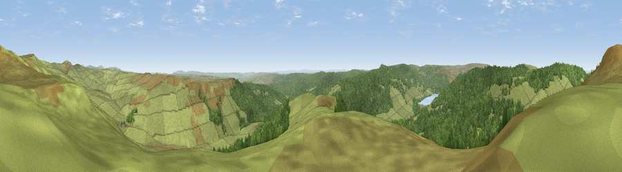

Viewpoint near Byrness
#3136 in England · top 11% of its area beats it · near ByrnessThe view, rendered

A 360° render of this exact spot computed from the terrain model, tree cover and land cover — summer colours, afternoon light, calibrated against photographs of famous viewpoints. Real trees, hedges and buildings will differ in detail.
The panorama
Grey silhouette: terrain skyline in each direction (720 bearings, Earth curvature and refraction included). Dashed green: skyline with trees (+15 m) and buildings (+8 m) as obstacles. Blue strip: how far the ground is visible on each bearing.
Where the view opens
Wedge length = distance to the farthest visible ground on that bearing (vegetation-aware). Rings at 10, 25 and 50 km.
What fills the view
65% grassland · 35% woodland
Angular shares of the visible panorama (visual magnitude), not map area. Landscape diversity 0.29 (0–1 Shannon).
Key numbers
More beautiful places nearby
The staircase of upgrades: each row has a higher view potential than everything closer. Driving times are estimates from straight-line distance, calibrated against real road routing — check an actual route before setting out.
| Place | Direction | Drive | Score |
|---|---|---|---|
| Viewpoint near Byrness | N · 0 km | ~1 min | 77.0 |
| Viewpoint near Byrness | NNE · 2 km | ~5 min | 77.1 |
| Viewpoint c12122_7374 | WNW · 9 km | ~18 min | 78.9 |
| Windy Gyle | NE · 14 km | ~25 min | 79.7 |
| Viewpoint c11995_7247 | WSW · 16 km | ~28 min | 82.1 |
| Viewpoint c12273_7856 | ENE · 18 km | ~31 min | 83.7 |
| Viewpoint c12396_7887 | NE · 23 km | ~38 min | 85.7 |
| Viewpoint near Kirknewton | NNE · 29 km | ~46 min | 86.1 |
55.33290, -2.35740 · source: screening · position refined by local search. Computed location — check access rights before visiting.